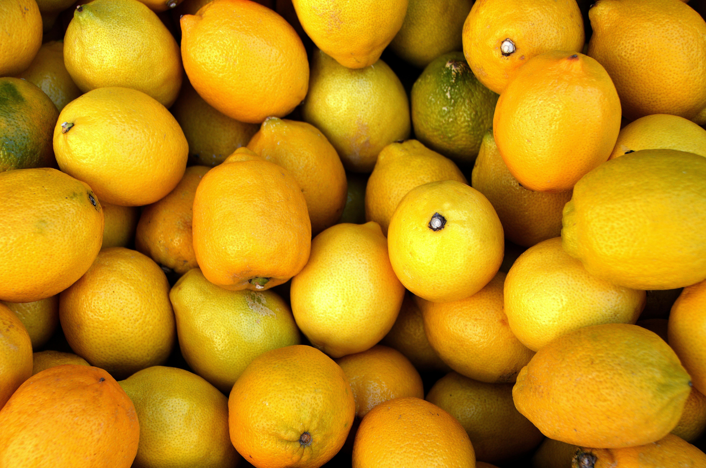

Barefoot Blueberry
Refreshing and sweet with vibrant blueberry flavor. Is it dessert or your new favorite beverage? You won't know if this is juice or adult juice, but you will love it.
Rating: 5 Corks

Sweet Peach Sutter Home
Fragrant, fruity and very peachy. It's as cheap as it is peachy. If you don't like peach, don't drink this.
Rating: 4 Corks

Oliver Winery Cherry Moscato
Semi-sweet with a tart flavor. While this isn't a fan favorite, it is acceptable.
Rating: 3 corks

Barefoot Lemon
Unexpected flavor for a wine but tastes clean. Is it a Clorox wipe or Clorox wine?
Rating: 3 corks
UnWINEd Reviews
1234 Sip Street
Missoula, MT 59801
(406) 555-4747